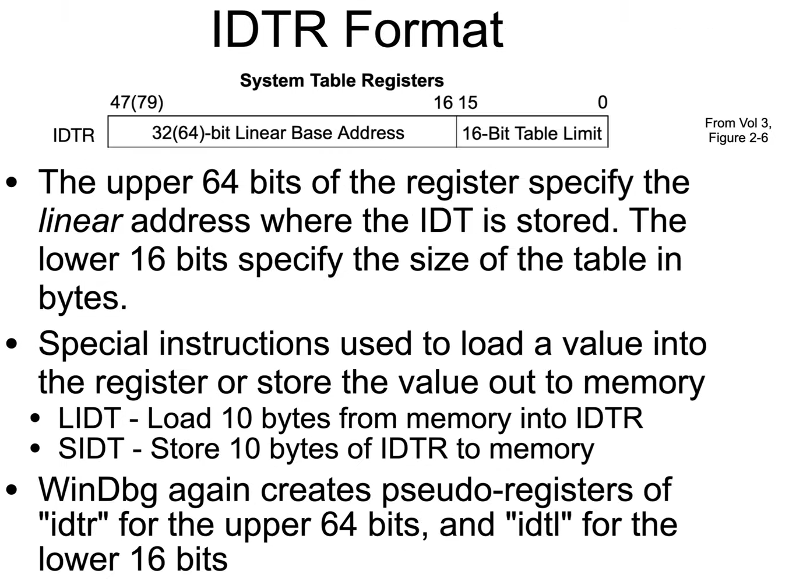

Interrupt Descriptor Table (IDT)
IDT in Red Team Notes
- IDTR points at the base (0th entry) of IDT
- When an interrupt occurs, the hardware automatically:
- consult the IDTR
- Find the appropriate offset in the IDT
- Push the saved state onto the stack (at the location determined by the TSS)
- change the CS:RIP to the address of the interrupt handler, as read from the IDT entry (interrupt descriptor).



When examining the memory around IDTR (the 64-bit value 0xfffff80078c68000), each line represents a 16 byte long interrupt descriptor record. while line 0 represents int 0, line 3 to int 3 and so on..
The limit is 0xfff = 4095 bits, (including 0, its 4096), which equals 256 records of 16 byte long (256*16=4096).